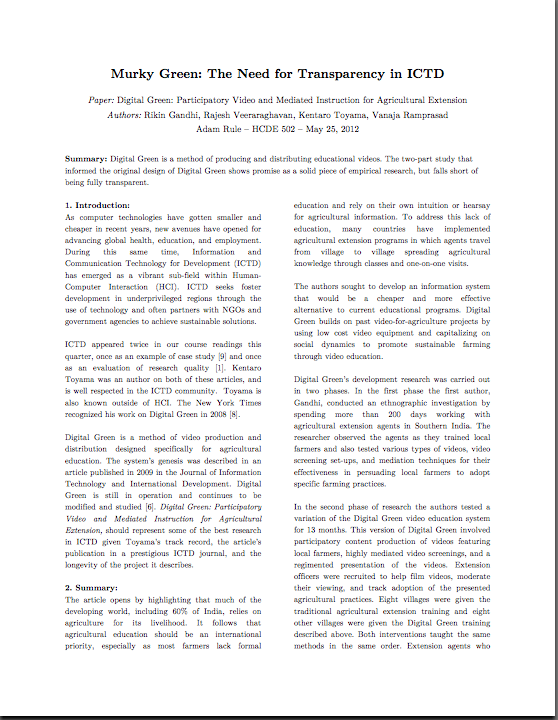

Paper
During the course I fostered an interest in ICTD. Two of the papers assigned for class homework were from the field of ICTD and both were co-authored by Kentaro Toyama. I wanted to explore more of Toyama's work, so I examined a journal article he co-authored about Digital Green, a video education system.
I examined the article along the lines of Burrell and Toyama's criteria for good ICTD research and found both strengths and weaknesses. The article did a wonderful job connecting research to practice by linking design decisions directly to observations. Few ICTD articles I have read have been superior in this aspect. However, the article sought to describe 20 months of research effort in a mere 12 pages. As a result, there was little description of the research methods used and very few findings presented from a 200 day-long ethnographic investigation. As a result the article lacks accuracy, completeness, and generalizability.
Through this evaluation I deepened my knowledge of ICTD, demonstrated and ability to produce a lengthy critique, and began to question the appropriateness of the 12-page limit for development papers.


acrule [at] uw [dot] edu
© 2012 Adam Rule